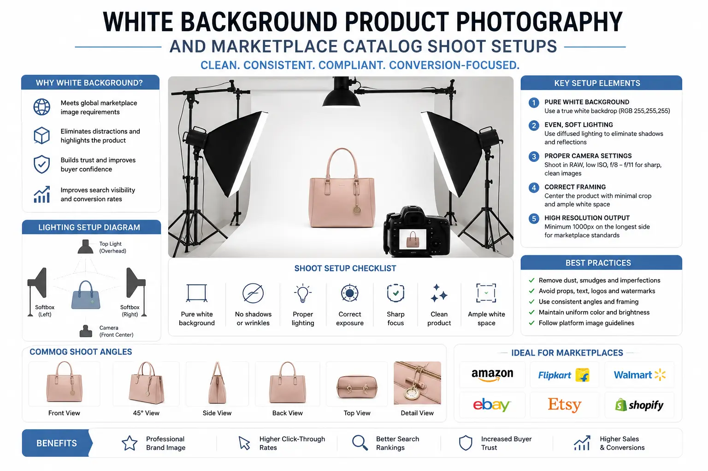
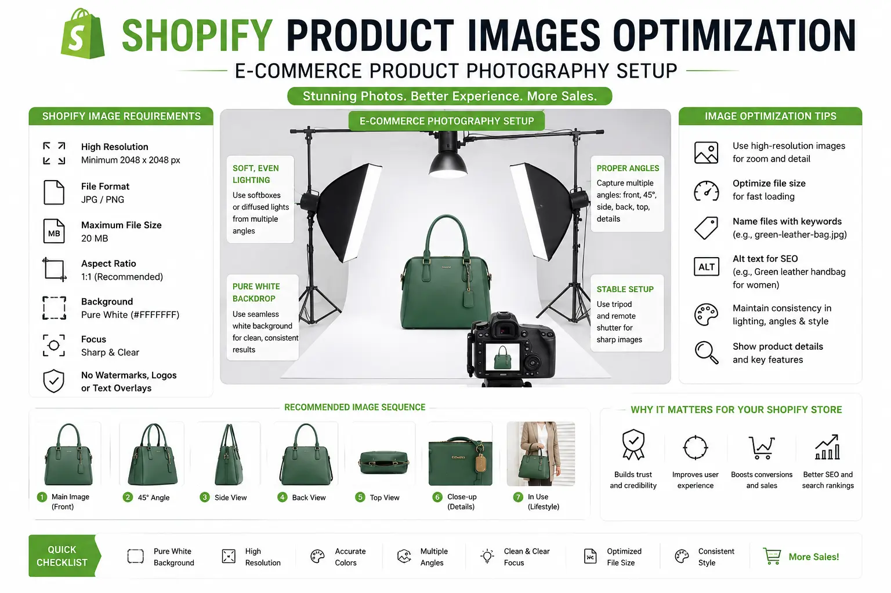

Optimizing Pure White-Background Product Shoots for Global Marketplace Compliance
The Marketplace Standard: Why Pure White Backgrounds Rule E-commerce
In global digital retail, the first image a customer sees determines whether they click on your product or scroll to a competitor. Major online marketplaces like Amazon, Flipkart, and Google Shopping enforce strict standards for this primary image. The rule is simple: the product must be displayed against a pure white background, with no watermarks, text, or distractions.
This standard ensures a clean and consistent shopping feed for customers. However, producing high-resolution, compliant images requires technical precision. Many sellers run into issues with shadows, color accuracy, and light wrap-around, which can cause their listings to be rejected or look unprofessional.
By investing in professional **E-commerce Product Photography** and structured **Marketplace Catalog Shoot** workflows, brands can ensure their assets meet all compliance rules while maintaining the detail needed to convert buyers.
Technical Precision: Achieving Pure White in the Studio
Getting a true RGB 255, 255, 255 white background in-camera requires separating your product and background lighting.
- Separated lighting setup. To produce clean **White Background Product Photography**, use dedicated lights to illuminate the background surface, ensuring it is slightly overexposed. Then, use separate key and fill lights to illuminate the product, preventing background light from washing out product details.
- Planning an Amazon and Flipkart product photoshoot. When coordinating an **Amazon and Flipkart product photoshoot**, ensure the product fills at least 85% of the frame. Use a tripod, lock your camera settings, and shoot at a narrow aperture (f/8 to f/11) to achieve edge-to-edge sharpness.
- Pairing catalog images with high-resolution lifestyle product frames. While the primary image must be white-background, use secondary slots to display **high-resolution lifestyle product frames**. These styled images show the product in use, helping customers understand scale and function.
- Shopify product images optimization. Once the images are captured, apply **Shopify product images optimization** techniques. Convert files to WebP format, adjust crop boundaries, and compress files to ensure fast page loads while maintaining high detail.
Ensure Listing Approval
Following marketplace rules prevents your listings from being suspended or rejected. Clean, compliant images ensure your products go live without delay.
Increase Click-Through Rates
Clean, crisp white-background images stand out in search results, driving more clicks and traffic to your product pages.
Minimize Color Returns
Using accurate color lighting ensures the product color in the photo matches the physical item, reducing customer returns and complaints.
Enable Detail Zooming
High-resolution catalog photography allows customers to zoom in and inspect stitching and textures, helping them make informed purchases.

Beyond Photography: Video and Styling Compliance
Modern marketplace listings should include compliant video assets and professional product styling to drive conversions.
- Integrating product video assets. Work with **professional product video makers** to create clean, 15-second product demonstration loops. Keep videos muted, capture them against clean backgrounds, and focus on product use and scale.
- Disciplined commercial product styling. Keep styling simple. In **commercial product styling**, avoid decorative props in the primary shot. The focus must remain entirely on the product, ensuring clean lines and accurate textures.
- Managing retail catalog production at scale. For brands with large inventories, set up standardized lighting grids. Standardized setups ensure consistency across your **retail catalog production**, allowing you to shoot hundreds of products quickly.
- Handling reflective and transparent goods. Reflective objects require custom diffusion boards to shape clean highlights. Use backlighting for transparent items to define glass or liquid edges without creating harsh reflections.
Marketplace Optimization Checklist
Follow these guidelines to prepare your visual assets for global marketplace uploads.
Image File Formats
- Export files in WebP or high-quality JPEG format.
- Set the image canvas to a square 1:1 aspect ratio (e.g., 2000px by 2000px) to support marketplace zoom features.
- Strip out unnecessary camera metadata to keep file sizes low.
Product Scale and Crop
- Position the product in the center of the frame, filling 85% to 90% of the canvas.
- Maintain consistent crop margins across all listings to create a clean storefront look.
- Ensure no edges of the product are cut off by the frame.
Shadow and Reflection Control
- Keep drop shadows soft and subtle to anchor the product naturally.
- Avoid harsh black shadows or floating products that look artificially cut out.
- Remove distracting reflections from metallic and glass surfaces.
Integrating Video into the Digital Shelf
Place compliant videos alongside your product images to boost conversions.
- The 360-degree rotation. Use a rotating turntable to capture a complete view of the product, helping customers inspect all angles.
- The scale demonstration. Show the product in a hand or next to a common object to explain its size, preventing post-purchase surprises.
- The feature highlight. Close up on key details—such as stitching, ports, or buckles—in the video loop to prove quality.

Conclusion
Optimizing white-background product photography is essential to ensure listing approval and drive sales. By investing in professional **E-commerce Product Photography** and structured **Marketplace Catalog Shoot** workflows, brands can build high-converting storefronts.
Through separated lighting setups, accurate color representation, and **Shopify product images optimization**, you can create a high-quality catalog that converts visitors into buyers.
At The PhD Ads in Madurai, we organize compliant **Amazon and Flipkart product photoshoots**, set up systems for **retail catalog production**, and work with **professional product video makers** to deliver compliant visual assets.
Key Topics
Optimize Your Marketplace Listings Today
Need compliant, high-resolution product photography for Amazon, Flipkart, or Shopify? At The PhD Ads in Madurai, we set up professional shoots that meet all marketplace standards and drive sales.
Email: team@e2o.in